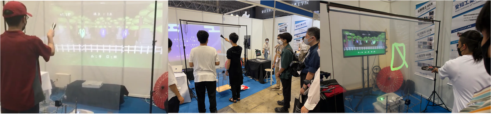

扇義陰陽道中
扇子で空中にお絵描きするインタラクティブコンテンツ
東京ゲームショウ2022 出展

ゲーム, インタラクティブコンテンツ, 2D LiDAR, 透明スクリーン, 東京ゲームショウ
使用技術
- C++ (OpenCV, 2D LiDAR, Bluetooth通信, M5StickC(圧力センサ, 加速度センサ))
- Unity (C#)
概要
扇子をコントローラとして使用するアクションゲームです。プレイヤーは扇子を使って空中に円・三角・四角の図形を描き、その図形を扇いで飛ばすことで敵を攻撃します。 ゲーム画面とプレイヤーの間には透明スクリーンを設置しており、扇子の軌跡がリアルタイムに投影されます。これにより、空中に直接絵を描いているような体験を実現しました。敵ごとに対応する図形が異なるため、素早く正確に図形を描き分けることが求められます。 「変わったものをコントローラにする」をテーマに、東京ゲームショウ2022にて展示を行いました。
2D LiDARによる扇子の軌跡取得と図形判別
プレイヤーが扇子で描いた軌跡は、2D LiDARを用いてリアルタイムに取得しています。取得した軌跡から図形の輪郭を生成し、OpenCVによる画像処理によって図形を判別しました。 図形判別は、輪郭を近似して得られた頂点数や円形度を利用しています。頂点数が3であれば三角形、4であれば四角形、円形度が一定以上であれば円として判定します。これにより、プレイヤーが空中に描いた図形をリアルタイムに認識し、ゲーム内の攻撃アクションへ反映しています。
東京ゲームショウ2022 への出展
作成したコンテンツは2022年9月15日~18日に東京ビッグサイトで開催された東京ゲームショウ2022にて展示を行いました。 東京ゲームショウ2022では、子どもから大人まで幅広い年齢層の来場者が本コンテンツを体験し、楽しんでいただきました。